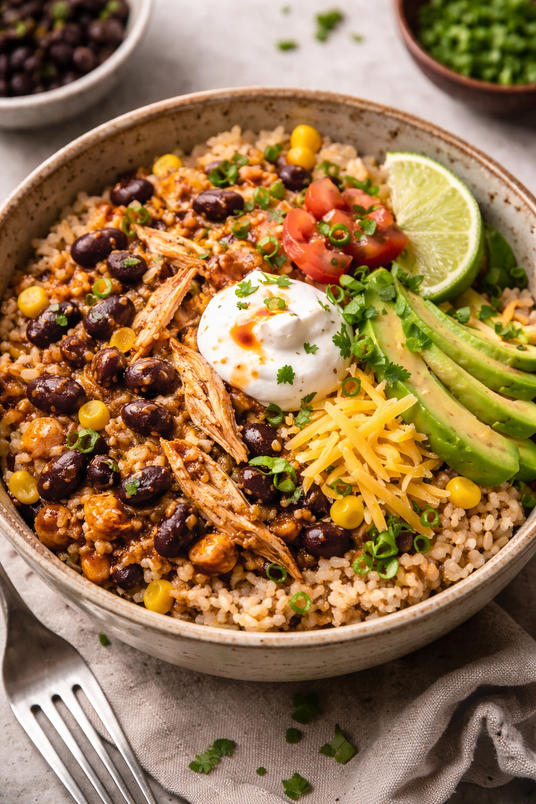

Instant Pot Burrito Bowl

Description
This is a great recipe for those nights when you are tired but
want a quick and filling dinner, great for protein!
Ingredients
- 1 chicken breast
- 1 cup dry brown rice
- 1 1/2 cups chicken broth (or water)
- 1 can black beans, rinsed
- 1 teaspoon chili powder
- 1 teaspoon smoked paprika
- 1 teaspoon garlic powder
- Jar of favorite salsa
- Sprinkle of salt
- Pepper to taste
Steps
- Put frozen chicken (or fresh) on bottom of instant pot
- Sprinkle spices directly on chicken
- Add rinsed rice on top of everything
- Pour in broth or water
- Set instant pot to high pressur for 25 minutes if frozen, or 15 minutes if fresh
- Once finished cooking, let natural release for 10 minutes, then quick release remaining pressure
- Remove chicken and shred
- Return chicken to instant pot, add in beans and jar of salsa
- Mix everything together
- Enjoy! Feel free to add your favorite toppings!
Home